أذكار
Remember Allah, every moment.
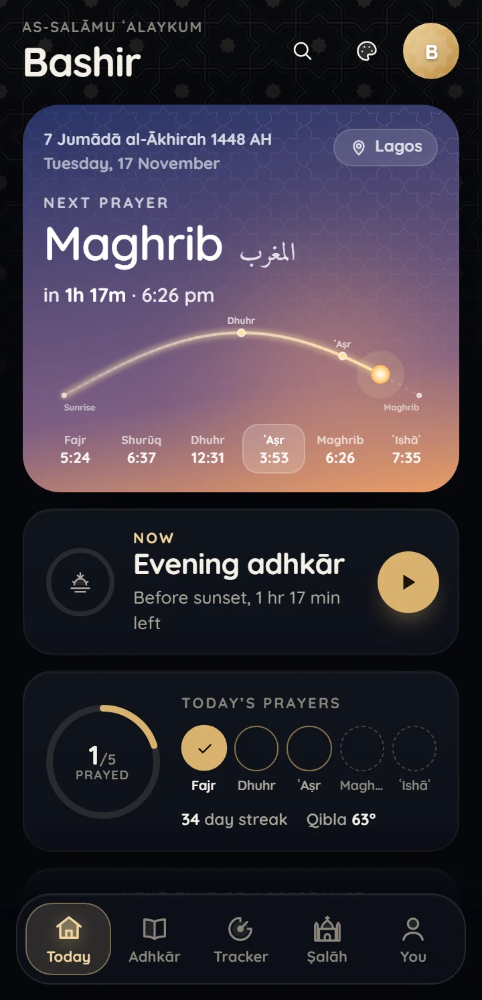
Today
It knows what is next.
The next prayer, the adhkār due now, the time duʿāʾ is answered.
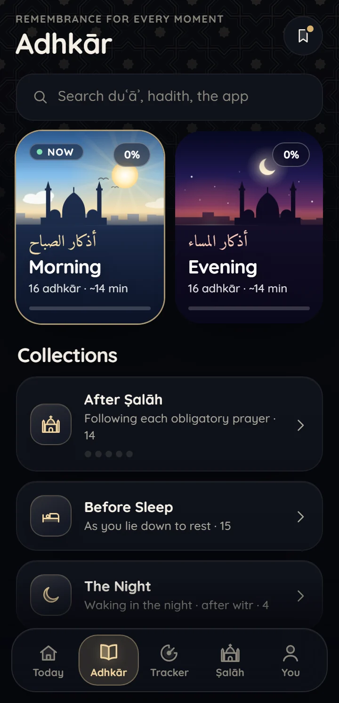
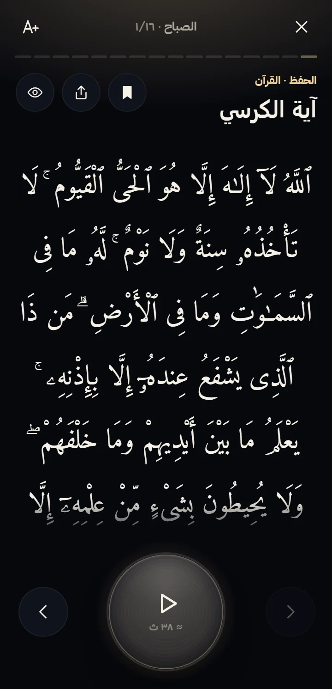
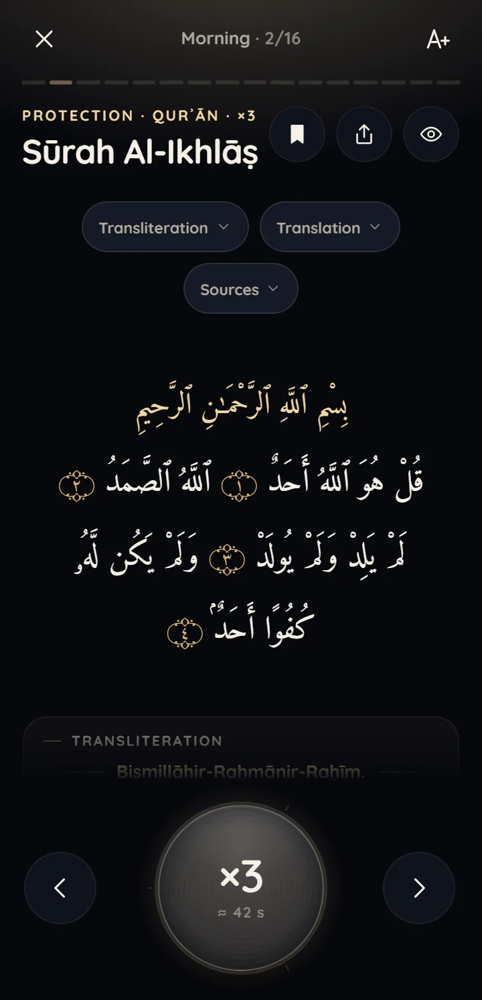
Adhkār
Authentic, morning to night.
Read, listen and learn them by heart. Every one referenced and graded.
Dhikr
Count on your fingers, as the Sunnah teaches.
The circle keeps a gentle pace. Your right hand keeps the count.
0°
TURN RIGHT
Ṣalāh · Qibla
Every prayer, facing the qibla.
Times worked out on your phone, a compass that locks onto the Kaʿbah.
Open now
Times of answered duʿāʾ
Ask when duʿāʾ is answered.
The authentic times from the Sunnah, found for your city every day.
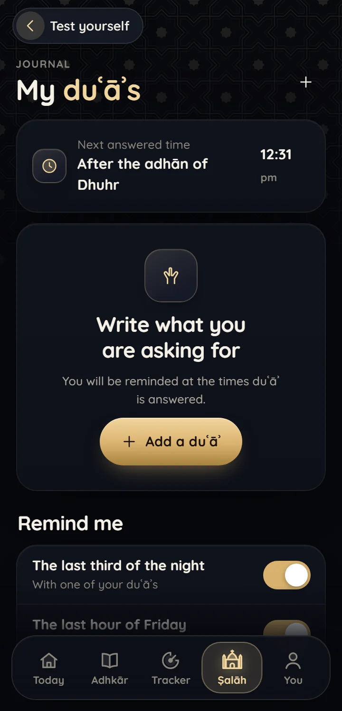
Adhkār · now
The last third of the night
It lasts until Fajr at 5:24 am. Call upon your Lord.
Your duʿāʾ:
Your duʿāʾ:
My duʿāʾs
Your duʿāʾs, at the right moment.
A private journal, with reminders at the times of acceptance.
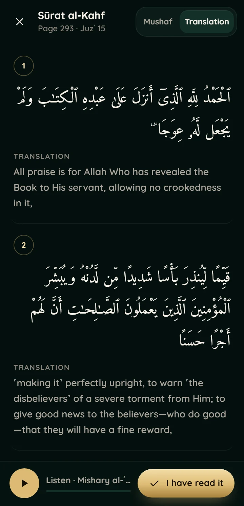
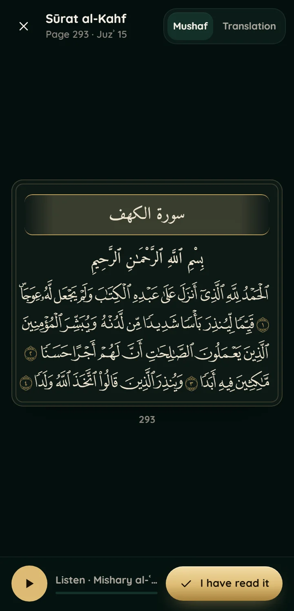
يوم الجمعة
Jumuʿah, made special.
Its Sunnahs, the hour of response, Sūrat al-Kahf.
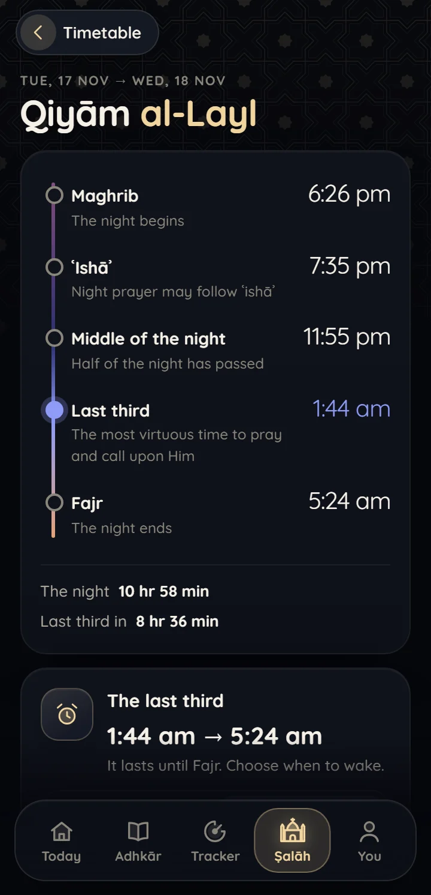
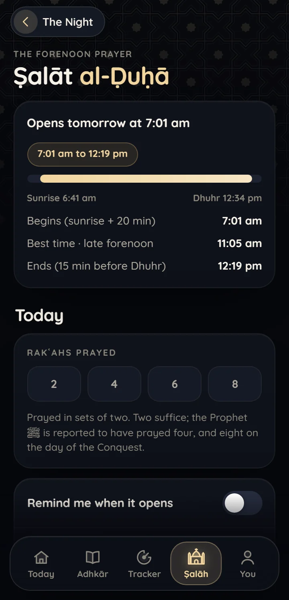
Qiyām · Ḍuḥā
The night and the forenoon.
The last third, witr and ḍuḥā, timed for wherever you are.
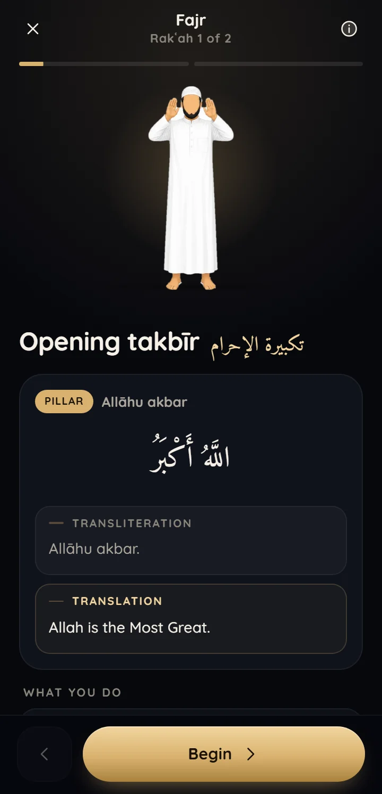
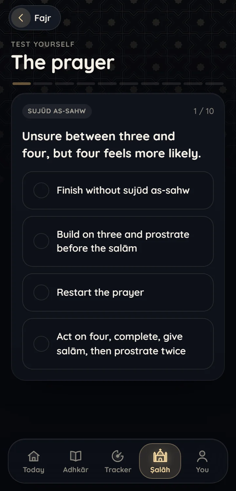
Learn
Learn to pray, step by step.
Each position and what is said in it, then test yourself.
Break from ṣalāh · day 3
Your remembrance continues
Adhkār, duʿāʾ and dhikr are all still yours.
Times of duʿāʾ
End break
✓Streak protected
◔Reminders paused
✦Usually 7 days · you decide
Made for sisters
On a break, still close.
Private and on your phone only. It never decides for you.

Ramaḍān
Every fast, to the second.
Suḥūr and ifṭār for your city, the day's arc, the month at a glance.
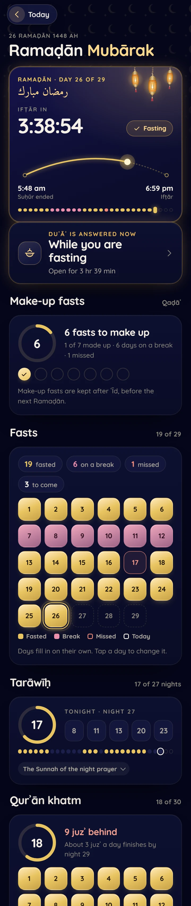
Ramaḍān
Kept, counted, made up.
Tarāwīḥ, your khatm, make-up fasts and the last ten nights.
2 Jumādā al-Ākhirah 1448Lagos
NEXT PRAYER
ʿAṣr3:53 pmin 47:31
Fajr5:23
Dhuhr12:31
ʿAṣr3:53
Maghrib6:26
ʿIshāʾ7:34
Morning ✓Evening ○After ṣalāh 2/5
سُبْحَانَ اللَّهِ›
0of 33
On your fingers · rounds of 33
✓ Finished 33
الْحَمْدُ لِلَّهِ›
0of 33
On your fingers · rounds of 33
✓ Finished 33
Widgets
Never more than a glance away.
The next prayer and your count for the day, on your home screen.
Windows
On your computer, too.
Laid out for a big screen. The next prayer floats above your work.
Adhkār
أذكار
Remembrance for every moment
Android · Windows · iPhone